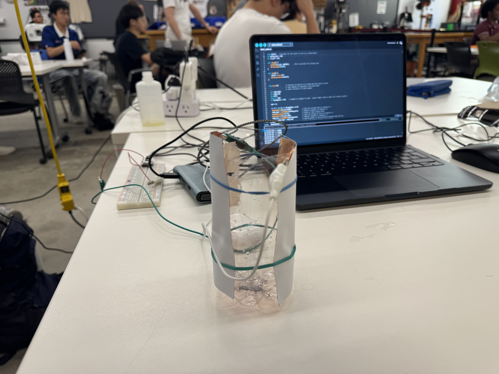
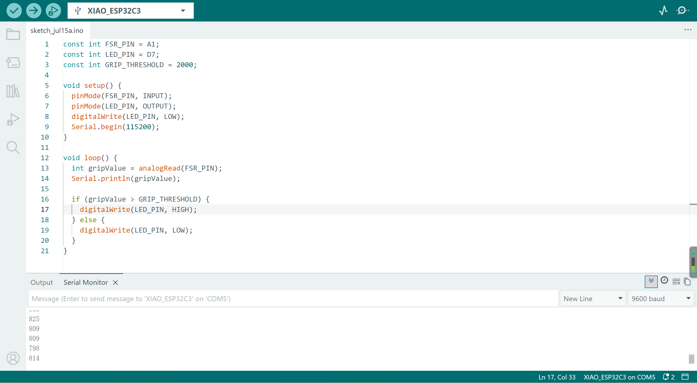
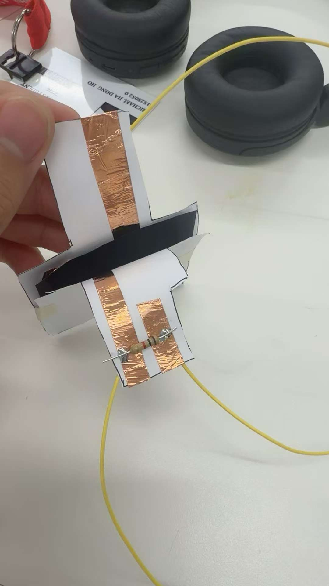

Weekly Lab Notes & Work
Task 1: Capacitive Sensor Measurement
Build a capacitive sensor to detect physical quantity, use millis() timer to replace delay() function for non-blocking code execution.
For the first part of our assignment we were fortunate enough to do it in groups at the end of class. Our group's assignment was to build a water level sensor using capacitors. We decided to use an empty water bottle and fix two capacitors so they would face each other and our idea worked pretty good!

Task 2: Temperature Sensor (NTC Thermistor) + LED Output
Project Description
Used NTC thermistor as temperature sensor, D7 LED as output indicator. Logic: LED turns ON when temperature > 30°C, LED stays OFF under or equal to 30°C. Program uses C++ class structure standard, no delay() blocking function (can upgrade millis timer easily).
Circuit Demo Video (Bilibili)
Complete Arduino Code (XIAO ESP32C3)
const float R_REF = 10000.0;
const float B_VALUE = 3950.0;
const float R25 = 10000.0;
const int NTC_PIN = A1;
const int ledpin = D7;
void setup() {
Serial.begin(9600);
pinMode(ledpin, OUTPUT);
}
void loop() {
int adcVal = analogRead(NTC_PIN);
float voltage = adcVal * 3.3 / 4095.0;
float rNtc = R_REF * (3.3 - voltage) / voltage;
float tempK = 1 / (1 / 298.15 + log(rNtc / R25) / B_VALUE);
float tempC = tempK - 273.15;
if(tempC > 30) {
digitalWrite(ledpin, HIGH);
} else {
digitalWrite(ledpin, LOW);
}
Serial.print("Temperature: ");
Serial.print(tempC);
Serial.println(" °C");
delay(500);
}
Task 5: CNC Assignment Plan
Plan CNC machining workflow, two options available:
- 2D DXF file: Cut plywood/OSB sheet material via routing
- 3D STL file: Mill 2.5D relief shape from solid stock
Final Project Preview: Force Sensor Test and Self-Locking System
Project Overview
This week I tested a force-sensitive sensor module as part of my final project development. The purpose of this test is to verify whether the system can detect changes in grip pressure and provide a corresponding output signal. This will later be developed into a self-locking system that can help stabilize the user's hand position when grip force decreases.
Force Sensor Demo Video (Bilibili)
Force Sensor Test
In this test, a force sensor was connected to the microcontroller to read analog pressure data. When the applied pressure increases and exceeds a certain threshold, the LED will turn on. When the pressure decreases below the threshold, the LED will turn off. This test shows that the sensor can successfully convert physical pressure changes into digital output signals.
Code and Serial Monitor
The following image shows the Arduino IDE code and serial monitor output when the pressure sensor is detected. The serial monitor prints the real-time grip value, which can be used to observe pressure changes and adjust the threshold value.

Force Sensor Assembly Process
The force sensor was assembled using copper foil and a pressure-sensitive structure. The assembly process shows how the conductive material and sensing area are arranged to detect hand pressure. This homemade sensor will be installed on the orthosis to monitor grip force during use.

Next Step: Self-Locking System
The current LED indicator is only a simple output test. In the final project, the LED will be replaced by a self-locking mechanism. When the system detects that the grip pressure drops below a safe threshold, the microcontroller will send a signal to activate a locking component, such as a solenoid or a small motor, to hold the hand or object in a stable position.
This test is an important preparation for the final project, because it confirms that the pressure input, signal processing, and output control can work together. Later, I will continue to improve the sensor structure, adjust the threshold, and integrate the locking system into the orthosis.